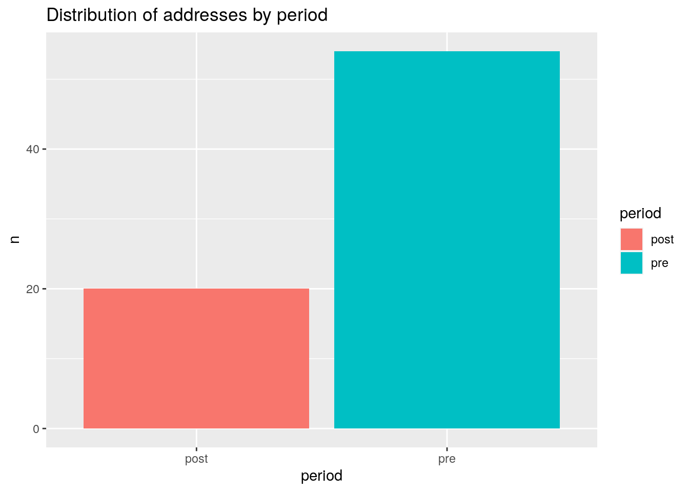
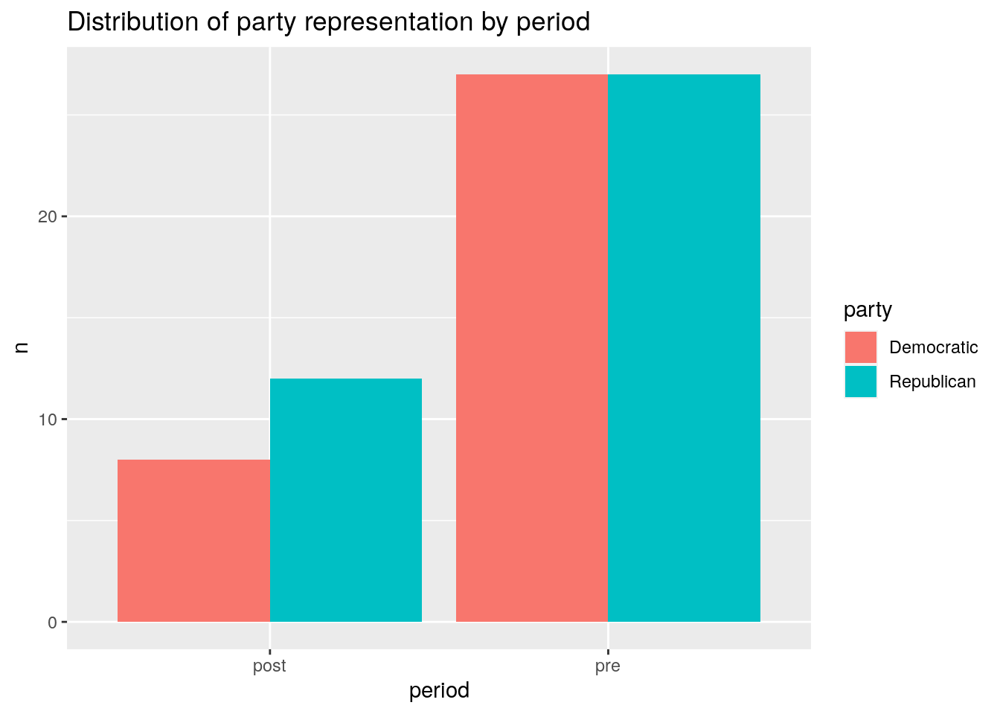

# Load packages
library(readr) # reading/ writing datasets
library(knitr) # for `kable()` function
library(dplyr) # basic data manipulation
library(lubridate) # date manipulation
library(tidytext) # text manipulation
library(textdata) # sentiment lexicons
library(qtalrkit) # data dictionary creation
library(ggplot2) # plotting
library(fs) # file system operationsTransform
Overview
The goal of this script is to transform the curated State of the Union data into a format that is suitable for analysis. For reference, the research question is:
Are there any notable differences in the language used by presidents from pre- and post-9/11? Starting after WWII and up to the present?
This is exploratory research and the analysis will be conducted using a variety of methods including:
- Sentiment analysis (demo here)
- Topic modeling
- Word co-occurrence
The aim is to gain possible insights into changes in presidential rhetoric before the historical event of 9/11 and after.
To facilitate the transformation process, I will load various R packages.
Description
Data
The State of the Union Addresses are accessible through the
quanteda.corporapackage using thedata_corpus_sotu()function.The data itself contains character and corpus objects, which encompass a collection of texts along with their associated metadata.
This dataset contains 240 observations and 7 variables. The variables include
text(the text of the State of the Union address),FirstName(the first name of the President),President(the last name of the President),Date(the date of the address),delivery(the delivery method of the address),type(the type of address), andparty(the political party of the President).The unit of observation in the curated dataset is the
text.
The data is a collection of State of the Union addresses from 1945 to present. The data dictionary for this dataset is seen in Table 1.
| variable | name | variable_type | description |
|---|---|---|---|
| president | President | character | The president’s last name |
| first_name | First Name | character | The president’s first name |
| party | Party | character | The president’s party affiliation |
| date | Date | date | The date the address was given |
| address_type | Address type | character | The type of address (SOTU, other) |
| delivery | Delivery modality | character | The modality of the address (spoken, written) |
| text | Text | character | The text of the address (audience reactions removed) |
The data dictionary shows that we have a number of variables that we can use for analysis. The text variable will be the most important for the analysis. It contains the actual text of the State of the Union addresses. The date variable will be useful for filtering the data for only addresses after WWII (1945-). The other variables may be useful for additional follow up analysis.
As it stands, the curated dataset has the text as the unit of observation. This corresponds to the individual addresses.
Structure
Data
The main question is about discerning any noteworthy disparities in the language used by presidents pre- and post-9/11. This analysis includes utilizing sentiment analysis, topic modeling, and word co-occurrence as metrics to track language features. For sentiment analysis, the required variables in the dataset include
address_id,address_year,period,word, andsentiment, withsentimentserving as the unit of observation. In the topic modeling, the necessary variables areaddress_id,address_year,period,type,frequency, andtf_idf, whereTF-IDFacts as the unit of observation. For word co-occurrence analysis, the pertinent variables consist ofaddress_id,address_year,period,word_ref,word_co, andco_occurrence, withco-occurrenceserving as the unit of observation.In the sentiment analysis, the focus is on examining the sentiment expressed by government officials or presidents. For topic modeling, the research question is about identifying words that frequently appear in the speeches of government officials or presidents. In the word co-occurrence analysis, the research question can be uncovering which words tend to appear together simultaneously.
Idealized format for the sentiment analysis.
Rows: 0
Columns: 5
$ address_id <int>
$ address_year <int>
$ period <chr>
$ word <chr>
$ sentiment <chr> Idealized format for the topic modeling.
Rows: 0
Columns: 6
$ address_id <int>
$ address_year <int>
$ period <chr>
$ type <chr>
$ frequency <int>
$ tf_idf <dbl> Idealized format for the word co-occurrence analysis.
Rows: 0
Columns: 6
$ address_id <int>
$ address_year <int>
$ period <chr>
$ word_ref <chr>
$ word_co <chr>
$ co_occurrence <int> The first step in the transformation process is to load the data and inspect the structure of the dataset.
# Load the data
sotu_tbl <- read_csv("../data/derived/sotu_curated.csv")
# Preview
glimpse(sotu_tbl)Rows: 241
Columns: 7
$ president <chr> "Washington", "Washington", "Washington", "Washington", "…
$ first_name <chr> "George", "George", "George", "George", "George", "George…
$ party <chr> "Independent", "Independent", "Independent", "Independent…
$ date <date> 1790-01-08, 1790-12-08, 1791-10-25, 1792-11-06, 1793-12-…
$ address_type <chr> "SOTU", "SOTU", "SOTU", "SOTU", "SOTU", "SOTU", "SOTU", "…
$ delivery <chr> "spoken", "spoken", "spoken", "spoken", "spoken", "spoken…
$ text <chr> "Fellow-Citizens of the Senate and House of Representativ…We now see the variables (as described in the data dictionary) as part of the sotu_tbl data frame. There are 241 rows and 7 columns.
The next step is to transform the data into a format that is suitable for analysis. Since there are a number of different analyses that will be conducted, I will create a number of different datasets that are suitable for each analysis.
Sentiment analysis
The first analysis will be sentiment analysis. This will involve using the bing lexicon to calculate the sentiment of each word in the text variable. The bing lexicon is a simple lexicon that classifies words as either positive or negative. The tidytext package will be used to tokenize the words in the text variable. Then the bing lexicon will be joined to the tokenized words to calculate the sentiment of each word.
An idealized structure for the sentiment analysis dataset is seen in Table 2.
| variable | name | type | description |
|---|---|---|---|
| address_id | Address ID | integer | Unique identifier for each address |
| address_year | Address Year | integer | Year of the address (e.g. 1945, 1978, etc.) |
| period | Period | character | Pre- or post-9/11 |
| word | Word tokens | character | Individual words from the text variable |
| sentiment | Sentiment class | character | Sentiment of the word (positive or negative) |
Topic modeling
For topic modeling, the text variable will be tokenized into words. In the analysis, we will likely want the frequency of words and the TF-IDF of words (to weight the importance of words). It will be important to have the address_id and address_year variables to keep track of the address and year of the address as we will want to split the dataset by period before the topic modeling analysis.
An idealized structure for the topic modeling dataset is seen in Table 3.
| variable | name | type | description |
|---|---|---|---|
| address_id | Address ID | integer | Unique identifier for each address |
| address_year | Address Year | integer | Year of the address (e.g. 1945, 1978, etc.) |
| period | Period | character | Pre- or post-9/11 |
| type | Word type | character | Individual words from the text variable |
| frequency | Frequency | integer | Frequency of the word type in the text variable |
| tf_idf | TF-IDF | numeric | TF-IDF of the word type in the text variable |
Word Co-occurrence
For word co-occurrence, we will want to calculate the co-occurrence of words in the text variable. This will involve tokenizing the text variable into words and then calculating the co-occurrence of words. The address_id and address_year variables will be important to keep track of the address and year of the address as we will want to split the dataset by period before the word co-occurrence analysis.
An idealized structure for the word co-occurrence dataset is seen in Table 4.
| variable | name | type | description |
|---|---|---|---|
| address_id | Address ID | integer | Unique identifier for each address |
| address_year | Address Year | integer | Year of the address (e.g. 1945, 1978, etc.) |
| period | Period | character | Pre- or post-9/11 |
| word_ref | Reference word | character | Reference word from the text variable |
| word_co | Co-occurring word | character | Co-occurring word from the text variable |
| co_occurrence | Co-occurrence | integer | Co-occurrence of the reference and co-occurring word (as PMI score) |
Transform
Let’s aim at transforming the data into the idealized structures for each analysis. We will start with the sentiment analysis dataset.
Sentiment Analysis
Let’s start by setting up our metadata. I will do this so that we can easily keep track of the variables in the dataset once we move to tokenize the text.
The metadata columns to create are:
address_id: Unique identifier for each addressaddress_year: Year of the addressperiod: Pre- or post-9/11
First, I will extract the year from the date variable and add it to a column address_year. The date variable has been read in (with readr) as a ‘date’ class. This means that it is possible to extract the year from the date using the year() function from the lubridate package.
# Add the address_year
sotu_tbl <-
sotu_tbl |>
mutate(address_year = year(date))
# Preview
glimpse(sotu_tbl)Rows: 241
Columns: 8
$ president <chr> "Washington", "Washington", "Washington", "Washington", "…
$ first_name <chr> "George", "George", "George", "George", "George", "George…
$ party <chr> "Independent", "Independent", "Independent", "Independent…
$ date <date> 1790-01-08, 1790-12-08, 1791-10-25, 1792-11-06, 1793-12-…
$ address_type <chr> "SOTU", "SOTU", "SOTU", "SOTU", "SOTU", "SOTU", "SOTU", "…
$ delivery <chr> "spoken", "spoken", "spoken", "spoken", "spoken", "spoken…
$ text <chr> "Fellow-Citizens of the Senate and House of Representativ…
$ address_year <dbl> 1790, 1790, 1791, 1792, 1793, 1794, 1795, 1796, 1797, 179…The next step is to work with the year column. We are going to first filter the rows such that we only have addresses after WWII (1945-).
# Filter the data for addresses after WWII
sotu_tbl <-
sotu_tbl |>
filter(address_year >= 1945)
# Preview
glimpse(sotu_tbl)Rows: 86
Columns: 8
$ president <chr> "Roosevelt", "Roosevelt", "Truman", "Truman", "Truman", "…
$ first_name <chr> "Franklin D.", "Franklin D.", "Harry S.", "Harry S.", "Ha…
$ party <chr> "Democratic", "Democratic", "Democratic", "Democratic", "…
$ date <date> 1945-01-06, 1945-01-06, 1946-01-21, 1947-01-06, 1948-01-…
$ address_type <chr> "SOTU", "SOTU", "SOTU", "SOTU", "SOTU", "SOTU", "SOTU", "…
$ delivery <chr> "written", "spoken", "written", "spoken", "spoken", "spok…
$ text <chr> "To the Congress:\n\nIn considering the State of the Unio…
$ address_year <dbl> 1945, 1945, 1946, 1947, 1948, 1949, 1950, 1951, 1952, 195…We can now see we’ve dropped from 241 addresses to 86.
Then we will create the period column using the year column to add pre_9_11 or post_9_11 to the period column with the case_when() function. The cutoff year for pre-9/11 is 2001.
# Add the period
sotu_tbl <-
sotu_tbl |>
mutate(period = case_when(
address_year < 2001 ~ "pre",
address_year >= 2001 ~ "post"
))
# Preview
glimpse(sotu_tbl)Rows: 86
Columns: 9
$ president <chr> "Roosevelt", "Roosevelt", "Truman", "Truman", "Truman", "…
$ first_name <chr> "Franklin D.", "Franklin D.", "Harry S.", "Harry S.", "Ha…
$ party <chr> "Democratic", "Democratic", "Democratic", "Democratic", "…
$ date <date> 1945-01-06, 1945-01-06, 1946-01-21, 1947-01-06, 1948-01-…
$ address_type <chr> "SOTU", "SOTU", "SOTU", "SOTU", "SOTU", "SOTU", "SOTU", "…
$ delivery <chr> "written", "spoken", "written", "spoken", "spoken", "spok…
$ text <chr> "To the Congress:\n\nIn considering the State of the Unio…
$ address_year <dbl> 1945, 1945, 1946, 1947, 1948, 1949, 1950, 1951, 1952, 195…
$ period <chr> "pre", "pre", "pre", "pre", "pre", "pre", "pre", "pre", "…Finally, we will add the address_id, all we need to do is to create a sequence of numbers from 1 to the number of rows in the dataset. A shortcut for this operation is the row_numbers() function from the dplyr package.
# Add the address_id
sotu_tbl <-
sotu_tbl |>
mutate(address_id = row_number())
# Preview
glimpse(sotu_tbl)Rows: 86
Columns: 10
$ president <chr> "Roosevelt", "Roosevelt", "Truman", "Truman", "Truman", "…
$ first_name <chr> "Franklin D.", "Franklin D.", "Harry S.", "Harry S.", "Ha…
$ party <chr> "Democratic", "Democratic", "Democratic", "Democratic", "…
$ date <date> 1945-01-06, 1945-01-06, 1946-01-21, 1947-01-06, 1948-01-…
$ address_type <chr> "SOTU", "SOTU", "SOTU", "SOTU", "SOTU", "SOTU", "SOTU", "…
$ delivery <chr> "written", "spoken", "written", "spoken", "spoken", "spok…
$ text <chr> "To the Congress:\n\nIn considering the State of the Unio…
$ address_year <dbl> 1945, 1945, 1946, 1947, 1948, 1949, 1950, 1951, 1952, 195…
$ period <chr> "pre", "pre", "pre", "pre", "pre", "pre", "pre", "pre", "…
$ address_id <int> 1, 2, 3, 4, 5, 6, 7, 8, 9, 10, 11, 12, 13, 14, 15, 16, 17…Now, we are in a position to tokenize the text variable. But before we do that, we need to decided if we are keeping the other variables or dropping them. Some of the variables may be useful for additional analysis, either to follow up on potential patterns or to use to filter the dataset even more.
For example, say see a trend in more negative sentiment in the post-9/11 addresses. We may want to investigate if this is related to the president’s party or even the president. In this case, we would want to keep the president and party variables.
On the other hand, a variable like delivery may turn out to be a variable we don’t want to have add additional complexity to the analysis. In this case, we might want to decide which value (level) of delivery to keep. Let’s take a quick look at a frequency table of the delivery variable.
# Frequency table of the `delivery` variable
sotu_tbl |>
count(delivery) |>
kable()| delivery | n |
|---|---|
| spoken | 74 |
| written | 12 |
In Table 5, we see that the great majority of the addresses in the dataset are ‘spoken’. Whatever potential differences from the ‘written’ modality may not be worth the additional complexity in the analysis.
With this in mind, we will filter the dataset to only keep delivery == 'spoken' and then drop:
deliverydateaddress_typefirst_name
At the same time, I will arrange the columns in a way that makes sense for the sentiment analysis dataset.
# Filter the data for `delivery == 'spoken'`
sotu_tbl <-
sotu_tbl |>
filter(delivery == "spoken") |>
select(address_id, address_year, president, party, period, text)
# Preview
glimpse(sotu_tbl)Rows: 74
Columns: 6
$ address_id <int> 2, 4, 5, 6, 7, 8, 9, 11, 12, 13, 15, 16, 17, 18, 19, 21, …
$ address_year <dbl> 1945, 1947, 1948, 1949, 1950, 1951, 1952, 1953, 1954, 195…
$ president <chr> "Roosevelt", "Truman", "Truman", "Truman", "Truman", "Tru…
$ party <chr> "Democratic", "Democratic", "Democratic", "Democratic", "…
$ period <chr> "pre", "pre", "pre", "pre", "pre", "pre", "pre", "pre", "…
$ text <chr> "Today, in pursuance of my Constitutional duty, I sent to…We now have a dataset with 74 addresses and then necessary metadata columns to give ample context to the sentiment analysis. The next step is to tokenize the text variable.
Before we do that, let’s do some quick diagnostics on the dataset to make sure we understand the distribution of some of the variables. For example, we may want to know the distribution of addresses by period. We might also want to know if there are more addresses by a party in one period than another. Let’s plot both of these distributions.
# Distribution of addresses by period
sotu_tbl |>
count(period) |>
ggplot(aes(x = period, y = n, fill = period)) +
geom_col() +
labs(title = "Distribution of addresses by period")
# Distribution of party representation by period
sotu_tbl |>
count(period, party) |>
ggplot(aes(x = period, y = n, fill = party)) +
geom_col(position = "dodge") +
labs(title = "Distribution of party representation by period")

We can see from the plots in Figure 1 that there are clearly more addresses pre-9/11 than post-9/11 (this make obvious sense as the dataset is from 1945 to present). We can see that the party distribution is quite similar, with a small majority of addresses from Republican presidents post-9/11.
Now, let’s tokenize the text variable. We will use the unnest_tokens() function from the tidytext package to tokenize the text variable into words adding a new column token. I will also add a token_id column to keep track of the order of the tokens in the text variable. To do this second operation, I will group the dataset by address_id and then use the row_number() function to create the token_id column.
# Tokenize the `text` variable
sotu_tbl <-
sotu_tbl |>
unnest_tokens(token, text) |>
group_by(address_id) |>
mutate(token_id = row_number()) |>
ungroup()
# Preview
glimpse(sotu_tbl)Rows: 395,672
Columns: 7
$ address_id <int> 2, 2, 2, 2, 2, 2, 2, 2, 2, 2, 2, 2, 2, 2, 2, 2, 2, 2, 2, …
$ address_year <dbl> 1945, 1945, 1945, 1945, 1945, 1945, 1945, 1945, 1945, 194…
$ president <chr> "Roosevelt", "Roosevelt", "Roosevelt", "Roosevelt", "Roos…
$ party <chr> "Democratic", "Democratic", "Democratic", "Democratic", "…
$ period <chr> "pre", "pre", "pre", "pre", "pre", "pre", "pre", "pre", "…
$ token <chr> "today", "in", "pursuance", "of", "my", "constitutional",…
$ token_id <int> 1, 2, 3, 4, 5, 6, 7, 8, 9, 10, 11, 12, 13, 14, 15, 16, 17…We now want to join the bing lexicon to the tokenized words to enable use to calculate the sentiment of each word in the exploratory analysis. The bing lexicon is a simple lexicon that classifies words as either positive or negative. There are other lexicons available in the textdata package that can be used for sentiment analysis, with varying levels of complexity. We’ll take the simple approach for this analysis.
Let’s load the bing lexicon and take a quick look at the structure of the lexicon.
# Load the bing lexicon
bing_lexicon <- get_sentiments("bing")
# Preview
glimpse(bing_lexicon)Rows: 6,786
Columns: 2
$ word <chr> "2-faces", "abnormal", "abolish", "abominable", "abominably"…
$ sentiment <chr> "negative", "negative", "negative", "negative", "negative", …We see that there are almost 7k words with a sentiment classification of either positive or negative in the bing lexicon.
Now to join the sotu_tbl and the bing_lexicon datasets. We will join the datasets on the token and word columns respectively. The left_join() function from the dplyr package will be used to join the datasets. Left joins take the dataset ‘on the left’ hand side of the join and add the columns from the dataset ‘on the right’ hand side of the join where there is a match on the join columns.
# Join the sotu_tbl and bing_lexicon datasets
sotu_tbl <-
sotu_tbl |>
left_join(bing_lexicon, by = join_by("token" == "word"))
# Preview
glimpse(sotu_tbl)Rows: 395,672
Columns: 8
$ address_id <int> 2, 2, 2, 2, 2, 2, 2, 2, 2, 2, 2, 2, 2, 2, 2, 2, 2, 2, 2, …
$ address_year <dbl> 1945, 1945, 1945, 1945, 1945, 1945, 1945, 1945, 1945, 194…
$ president <chr> "Roosevelt", "Roosevelt", "Roosevelt", "Roosevelt", "Roos…
$ party <chr> "Democratic", "Democratic", "Democratic", "Democratic", "…
$ period <chr> "pre", "pre", "pre", "pre", "pre", "pre", "pre", "pre", "…
$ token <chr> "today", "in", "pursuance", "of", "my", "constitutional",…
$ token_id <int> 1, 2, 3, 4, 5, 6, 7, 8, 9, 10, 11, 12, 13, 14, 15, 16, 17…
$ sentiment <chr> NA, NA, NA, NA, NA, NA, NA, NA, NA, NA, NA, NA, NA, NA, N…We now have a dataset that is suitable for sentiment analysis, at least in terms of the structure. Let’s get a view of the distribution of the sentiment classes.
# Frequency table of the `sentiment` variable
sotu_tbl |>
count(sentiment) |>
kable()| sentiment | n |
|---|---|
| negative | 9595 |
| positive | 18909 |
| NA | 367168 |
Many, actually most, word tokens do not have a sentiment classification in the bing lexicon. This is not surprising because many words will not: (1) be in the lexicon and (2) have a sentiment classification by the very nature of the token (e.g. ‘the’, ‘and’, ‘of’, etc.). We will need to decide how to handle these words in the analysis. For now, we will keep them in the dataset.
Documentation
Currently, we have two datasets available. The first dataset similar as the original data, while the second dataset is specifically tailored for sentiment analysis. In the sentiment analysis dataset, sentiment annotations have been incorporated, and the text has been tokenized into words. Additionally, columns such as first_name, address_type, and delivery have been removed, while token_id, period, address_id, and address_year have been added. Both datasets are stored in the ../data/derived directory.
Finally, let’s write this dataset and create a data dictionary for the dataset. The data dictionary will be useful for future reference and for sharing the dataset with others.
# Write the dataset
write_csv(sotu_tbl, "../data/derived/sotu_sentiment.csv")
# Create the data dictionary
create_data_dictionary(
sotu_tbl,
"../data/derived/sotu_sentiment_dd.csv"
)File already exists at `file_path`. Use `force = TRUE` to overwrite.The data is written to disk and the scaffold for the data dictionary is created. The structure of the data/ directory looks like this:
# List the contents of the data directory
dir_tree("../data", recurse = 2)../data
├── analysis
├── derived
│ ├── sotu_curated.csv
│ ├── sotu_curated_dd.csv
│ ├── sotu_sentiment.csv
│ └── sotu_sentiment_dd.csv
└── originalThe data dictionary with the content I added to the scaffold appears in Table 7.
read_csv("../data/derived/sotu_sentiment_dd.csv") |>
kable()| variable | name | variable_type | description |
|---|---|---|---|
| address_id | Address ID | numeric | Unique identifier for each address |
| address_year | Address Year | numeric | Year of the address |
| president | President | character | Name of the President |
| party | Party | character | Political party of the President |
| period | Period | character | Period of the address (‘pre’ or ‘post’ 9/11) |
| token | Token | character | Individual word tokens |
| token_id | Token ID | numeric | Unique identifier for each token within an address |
| sentiment | Sentiment score | character | Sentiment score of the token (‘positive’ or ‘negative’) |
To make sure that I do not share the data or datasets as part of the GitHub repository, I will add the dataset file to the .gitignore file. This will ensure that the data is not shared with others when the repository is shared. Note, since our analysis is reproducible, the data can be easily recreated by running the project.
You usually will add the data files to the .gitignore file manually. However, I will show how you can do it programmatically. Note, you will only run this once, interactively as not to append the .gitignore file multiple times.
# Add the data files to the .gitignore file
cat("../data/derived/sotu_sentiment.csv", file = "../.gitignore", append = TRUE)